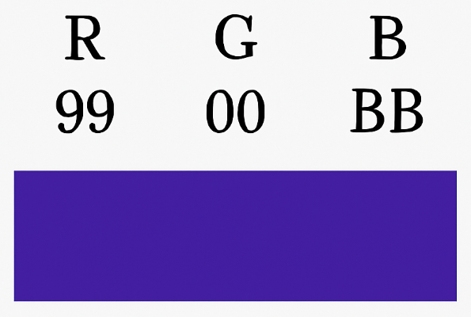

Vergleiche die Konzepte Alphabet, Wort und Satz für eine natürliche Sprache (z. B. Deutsch) und eine Programmiersprache deiner Wahl. Gib jeweils Beispiele an.
RGB-Farben werden im Web häufig in der Form #RRGGBB angegeben – dabei steht jeder Doppelbuchstabe für einen Farbanteil in Hexadezimaldarstellung.
a) Erkläre anhand des Beispiels in der Abbildung die Syntax von RGB-Farbdefinitionen. Nutze ggf. externe Recherchequellen.

b) Begründe, dass es sich bei RGB-Farbdefinitionen um eine formale Sprache handelt. Gib dabei das Alphabet A an und erläutere die Struktur der zulässigen Zeichenketten.
c) Nenne zwei Zeichenketten über dem Alphabet A, die nicht zur Sprache gültiger RGB-Farbdefinitionen gehören. Begründe jeweils kurz.
d) Erkläre, warum in dieser Sprache bei einzelnen Farbanteilen ggf. auch führende Nullen verwendet werden müssen, obwohl sie aus mathematischer Sicht keine Wertveränderung bewirken.
Gegeben ist das Alphabet Σ = {0, 1}.
Eine Fahrplan-App lässt Abfahrtszeiten nur im Format hh:mm (24-Stunden-Zählung, z. B. 07:30) zu. Das Alphabet ist Σ = {0, …, 9, :}.
07:30, 7:30, 24:00, 23:59, 12:60 und 12:3:0, ob sie zu LZeit gehören. Begründe jede Ablehnung.